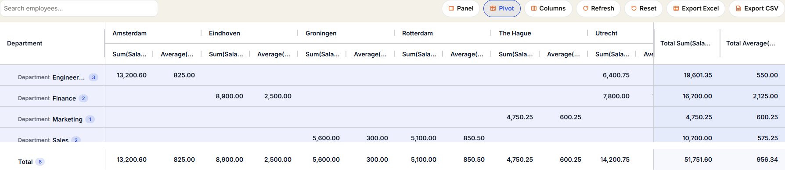
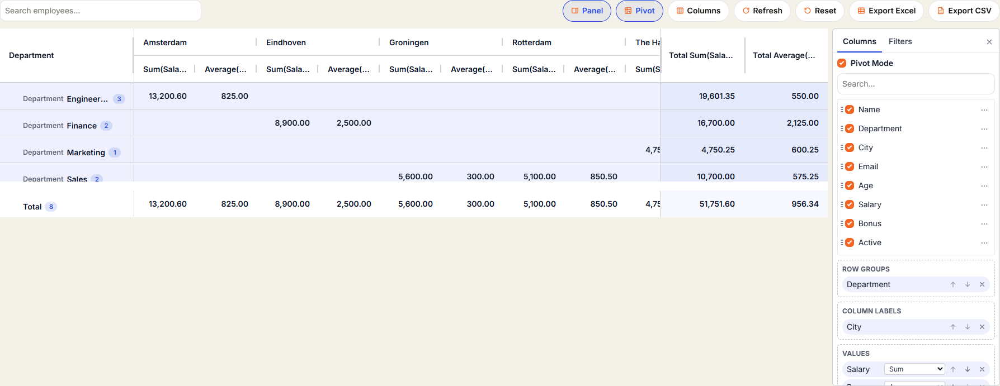
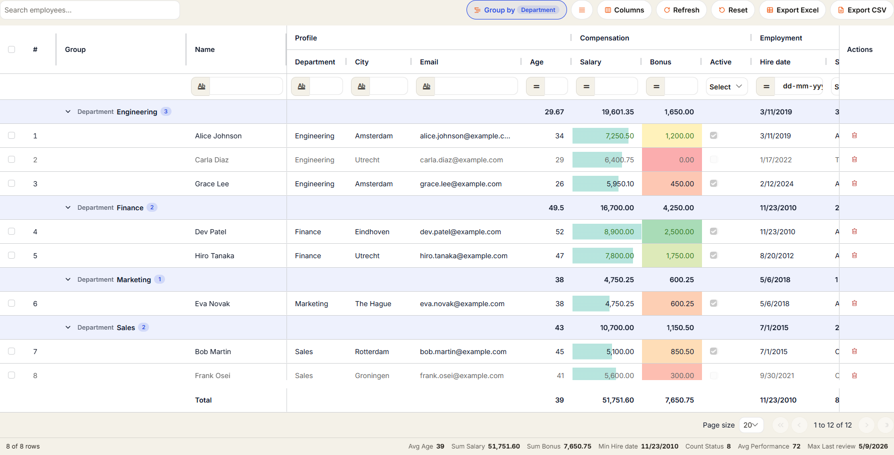
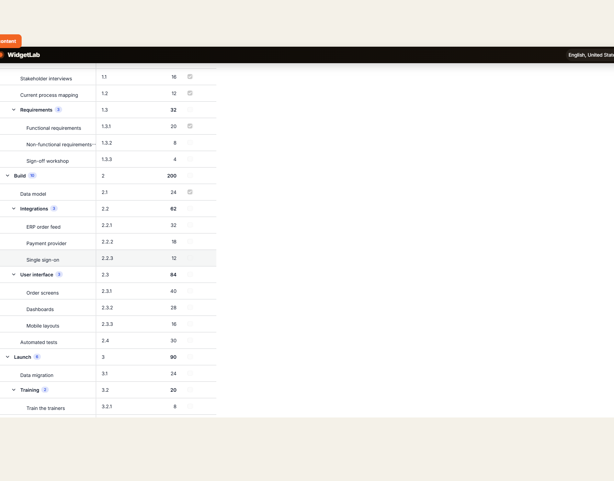
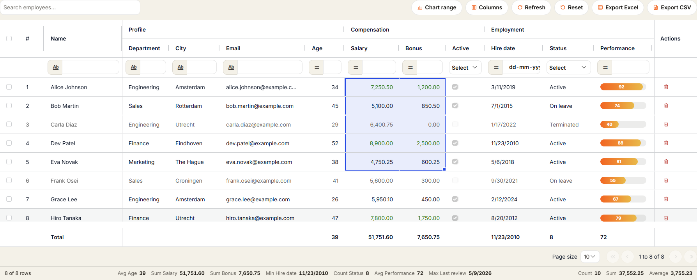
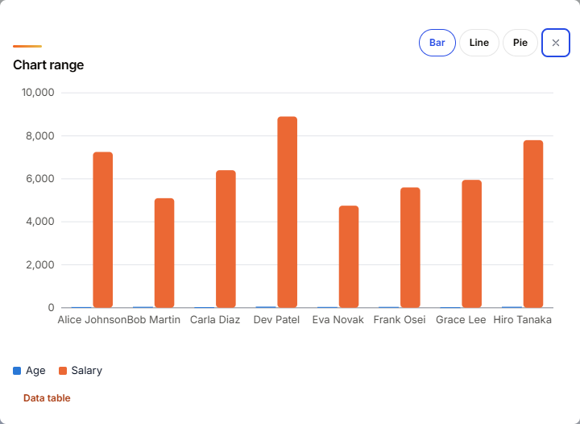
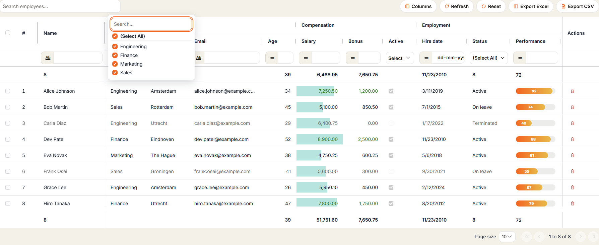
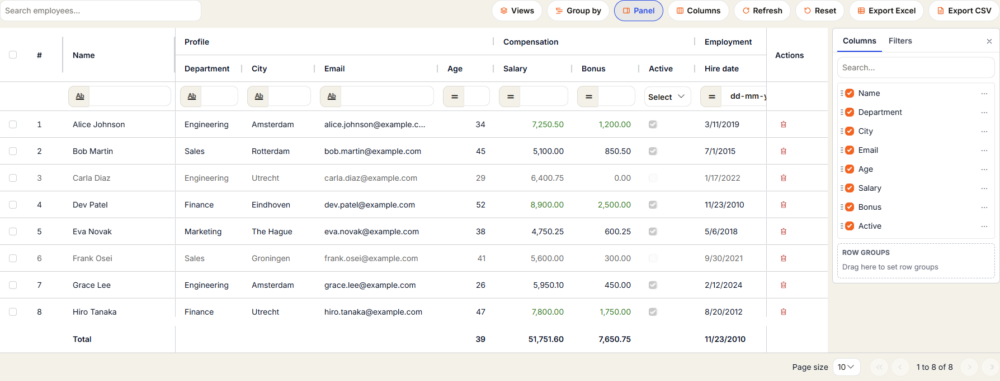

What you can build with AG Grid in Mendix
AGGrid is a free Mendix data grid widget for the tables Data Grid 2 can't do on its own. Typical uses:
Editable data grid
Price lists, timesheets, stock counts and planning tables where users type straight into the cells, with undo, redo and an On commit microflow.
Pivot tables and reports
Sales by region and month, grouped lists with subtotals and grand totals, and charts of selected cells.
Tree grid
Project plans, bills of material, cost centres and org charts shown as a hierarchy from a parent association.
Excel-like data entry
Select cell ranges, use the fill handle, paste blocks from Excel and check values before they are saved.
Large tables
Server-side paging, sorting and filtering, like Data Grid 2, so the grid works with any number of rows.
Excel export
A real, styled .xlsx file with typed numbers and dates, frozen header and totals, or a plain CSV file.
What's new in AGGrid 1.1.0
The enterprise release. Every feature below is new in 1.1.0, optional, and built on the free AG Grid Community edition.
Pivot tables
Row groups × column labels × values with sum, average, count, min, max and distinct count, subtotals and grand totals; exported as its own Excel sheet.
Row grouping
Group by up to three columns with counts and aggregates, or lazy server-side groups that load page by page.
Tree data
Hierarchies from a parent key (also over an association) or a path; expand, collapse, aggregate per parent, keep ancestors while filtering.
Cell ranges and fill handle
Excel-like range selection, copy as TSV, fill copies or series, Ctrl+D, paste from Excel, one undo step.
Charts from a range
Bar, line and pie charts of the selected cells, with legend, tooltips and an accessible data table.
Set filter and side panel
Checkbox list filters with search and blanks; a Columns and Filters side panel with drag-and-drop zones.
Saved views
Users save named layouts (columns, sorting, filters, grouping, pivot) per user or per browser, with a default view.
Validation and detail rows
Validation expressions per column with an issues badge; expandable rows that hold any Mendix widgets.
Conditional formatting
Data bars, colour scales, icon sets and sparklines for number columns, also exported as native Excel formats.
Styled Excel export
Header fill, column widths, frozen panes, SUBTOTAL totals and extra Pivot and Selection sheets.
Reliability
Error boundary with Retry, failed-save banner with Retry and Discard, right-to-left support, 133 unit tests.
Status bar and totals
Row counts and aggregates of the selection; top and bottom totals rows that users can change.
Features already in 1.0.0
- Any Mendix data source (database, XPath, association, microflow, nanoflow) with Browser or Server data loading.
- Attribute, dynamic text and custom content columns (any widgets per row); render as text, link, badge, progress bar or image.
- Multi-column sorting, floating filters with the Data Grid 2 operator menu, quick search, pagination.
- Inline editing with undo/redo and three commit modes, including an On commit microflow with new value, old value and attribute name.
- Single and multi selection through the Mendix selection API.
- Column pinning, hiding, resizing, reordering, a column chooser and a remembered layout.
- Row drag with an order attribute, a totals row, Excel and CSV export.
- Atlas (Data Grid 2 look), Quartz, Alpine, Balham and Material themes in light, dark or automatic mode; eleven languages.
Screenshots








AGGrid compared with Data Grid 2
| Capability | Data Grid 2 | AGGrid 1.1.0 |
|---|---|---|
| Sorting, filters, paging, server-side data | Yes | Yes |
| Inline editing with undo/redo and commit modes | Via custom content | Yes, built in |
| Row grouping with aggregates | No | Yes, up to 3 levels, also lazy on the server |
| Pivot table | No | Yes |
| Tree data | No | Yes |
| Cell ranges, fill handle, paste from Excel | No | Yes |
| Charts from selected cells | No | Yes |
| Saved views per user | Personalization of columns | Named views incl. filters, grouping and pivot |
| Excel export | Yes | Styled .xlsx with conditional formats, SUBTOTAL totals, pivot sheet |
| Totals rows, status bar | No | Yes |
Install AG Grid in a Mendix app
- Download
com.mxtechies.widget.web.AGGrid.mpkfrom the latest GitHub release or the Mendix Marketplace. - Copy it into the
widgetsfolder of your app and press F4 in Studio Pro. - Drop AGGrid (toolbox, Data containers) on a page, choose a data source and add columns.
- Switch on what you need on the Features tab: quick search, export, grouping, pivot, tree data, ranges, saved views.
Upgrading from 1.0.0: replace the .mpk and press F4. Pages keep their behaviour; only the Excel file is styled by default. See the changelog and the full property reference.
Requirements and limitations
- Mendix Studio Pro 11.0 or later, Atlas UI. No other Marketplace modules are needed; AG Grid Community 36 is bundled.
- Web and responsive apps only, not native mobile.
- Pivot, grouping, tree data, ranges, side panel and styled Excel are built into the widget on AG Grid Community, so they can behave differently from AG Grid Enterprise.
- Pivot, tree data, row grouping and detail rows need Browser data loading (lazy server groups excepted). Pivot cells are read-only.
- In Server data loading, dynamic text and custom content columns can't sort or filter, and totals cover only the loaded rows.
Frequently asked questions
How do I use AG Grid in Mendix?
Install the AGGrid pluggable widget (.mpk) in the widgets folder of your Mendix app, press F4 in Studio Pro, drop AGGrid on a page, choose a data source and add columns. Sorting, filtering, editing and export are Studio Pro properties; no JavaScript is needed.
Do I need an AG Grid Enterprise licence?
No. AGGrid bundles only AG Grid Community (MIT) and is itself open source under Apache-2.0. Pivot mode, tree data, row grouping, cell ranges, set filters and the styled Excel export are implemented by the widget.
Should I use AGGrid or Data Grid 2?
Data Grid 2 is the standard Mendix list grid. Use AGGrid when users need pivot tables, grouping with subtotals, tree data, Excel-like ranges, fill and paste, saved views, conditional formatting or a styled Excel export. Its Atlas theme looks like Data Grid 2.
Does AGGrid handle large data sets?
Yes. Server data loading pages, sorts and filters on the database like Data Grid 2, so any number of rows works. Browser data loading suits lists up to some thousands of rows.
Which Mendix versions does AGGrid support?
Mendix 11.0 and newer, web and responsive profiles.
Is AG Grid for Mendix free?
Yes. AGGrid is open source under Apache-2.0 and built on AG Grid Community (MIT). It is free for commercial Mendix apps and needs no AG Grid Enterprise licence.
Can I build a pivot table in Mendix?
Yes. Turn on Pivot on the AGGrid Features tab and give each column a role: row group, column label or value. You get subtotals, total columns and a grand total row, and the pivot is exported as its own Excel sheet.
How do I export a Mendix grid to Excel?
Turn on the Export button and choose Excel. AGGrid writes a real .xlsx file with typed numbers and dates, a frozen header, column widths, conditional formats and SUBTOTAL totals. CSV export is available too.
How do I show a tree grid in Mendix?
Turn on Tree data and set a Key and Parent key expression (an association path works) or a Path expression. Users expand and collapse rows, and number columns are summed per parent.
Why do my inline edits disappear after a refresh?
Edits stay in the browser until they are committed. Set Commit to Commit directly, or run an On commit microflow that commits the object, or add a Save button.
How do I freeze columns in a Mendix data grid?
Set Pinned to Left or Right on the column. Row numbers and checkboxes stay pinned next to the frozen columns.
Can users save their own grid layout?
Yes. Saved views store named layouts with columns, sorting, filters, grouping and pivot, per user in a String attribute or per browser.
Does AGGrid work in Mendix native mobile apps?
No. AGGrid is for Mendix web and responsive apps.